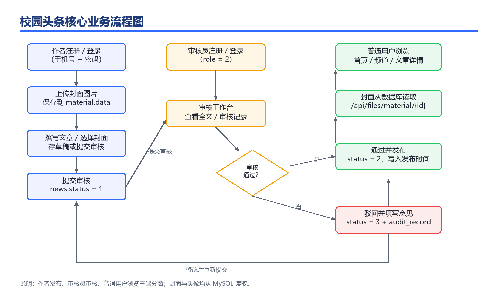
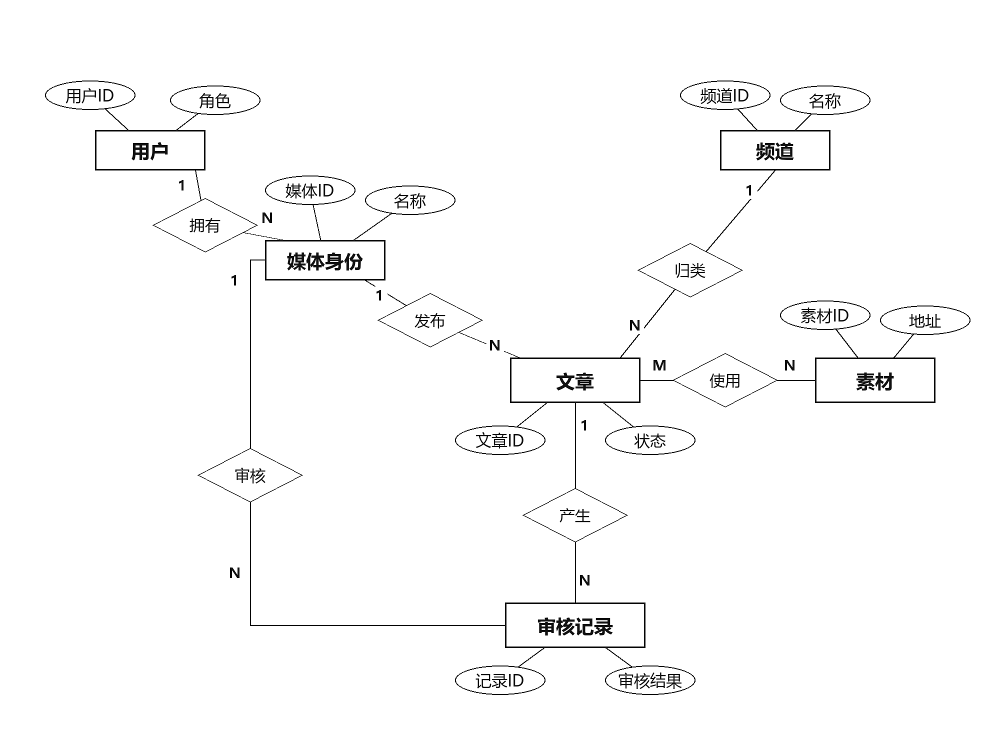

三端统一账号
普通用户、作者、审核员共用 ap_user，通过 role 区分权限，作者与审核员关联 wm_user 业务身份。
从素材上传到审核发布，再到用户端浏览，所有环节都在同一套权限体系内完成。
普通用户、作者、审核员共用 ap_user，通过 role 区分权限，作者与审核员关联 wm_user 业务身份。
素材管理、富文本编辑、标签与频道、单图/三图/无图封面，支持草稿与提交审核。
待审 / 已通过 / 已驳回三栏，查看全文、通过发布或驳回填写意见，审核记录自动落库。
头像写入 ap_user.avatar_data，封面写入 material.data，重新登录后仍从数据库读取同一张图。
JWT 携带 userRole / wmUserId，拦截器与 Service 层双重校验；路由守卫限制越权访问。
Spring IoC/AOP、声明式事务、Spring MVC 拦截器、文件上传、MyBatis 动态 SQL 与 MyBatis-Plus 分页。
打开系统后可直接使用以下账号体验完整流程。
频道、搜索、文章详情、点赞评论、个人资料与头像上传。
上传封面、富文本发文、存草稿、提交审核、管理自己的文章与素材。
查看待审全文、通过发布、驳回填写意见、查看审核记录。
文章状态从草稿、待审核、通过到驳回，所有状态变更都有明确的角色与事务边界。

Playwright 驱动 Edge 自动截图，覆盖桌面端 1440×900 与移动端 390×844。
Spring 负责 Bean 与事务，Spring MVC 负责接口与拦截器，MyBatis-Plus 负责数据访问，MySQL 保存业务与图片二进制。
ap_user 统一账号，wm_user 承载作者/审核员业务身份；news、material、audit_record 等表通过外键形成完整内容链路。

需要 JDK 17、Maven、MySQL 8.0、Node 18+。启动前请确认 MySQL80 服务已运行，root 密码与 .env 一致。
scripts\start.bathttp://127.0.0.1:5173git clone https://github.com/Bac0nnn/campus-headlines.git
cd campus-headlines
copy .env.example .env
# 启动 MySQL80 后
scripts\start.bat
# 浏览器打开
http://127.0.0.1:5173scripts\stop.ps1三端角色、图片入库、审核闭环、SSM 技术实践。